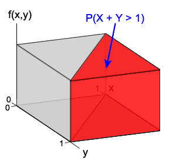

If you don't want to print now,
A discrete random variable's probability function gives probabilities for all of its possible values. Probabilities for more complex events can be found by summing it over the relevant values. A similar quantity describes the joint distribution of two discrete random variables.
Definition
For two discrete random variables \(X\) and \(Y\), the joint probability function gives the probabilities for all possible combinations of values of the two variables,
\[ p(x, y) \;=\; P(X=x \textbf{ and } Y=y) \]A joint probability function can often be expressed as a single mathematical formula, but a 2-dimensional table of probabilities is an alternative.
Question
Consider a weighted six-sided die for which the value "6" has twice the probability of the other values. If the die is rolled twice, with \(X\) and \(Y\) being the values that appear on the first and second rolls, what is the joint probability function of the two variables?
(Solved in full version)
Joint probability functions must satisfy two properties:
Properties of joint probability functions
\[ p(x,y) \ge 0 \text{ for all } x,y \] \[ \sum_{\text{all } x,y} p(x,y) = 1 \](Proved in full version)
Probabilities for events about \(X\) and \(Y\)
The probabilities of other events can be found by adding joint probabilities. For any event, \(A\),
\[ P(A) \;\;=\;\; \sum_{(x,y) \in A} {p(x,y)} \]Question
In the above weighted dice example, what is the probability that the sum of the two dice will be ten or more?
(Solved in full version)
The joint probability function of two discrete random variables can be displayed graphically in a 3-dimensional bar chart that is closely related to a 2-dimensional bar chart for a single variable.
Maximum and minimum of three rolled dice
Consider rolls of three fair dice for which there is probability \(\frac 1 6\) for each value. We define \(X\) and \(Y\) to be the maximum and minimum of the three values. We now give (without proof) their the joint probability function.
\[ p(x,y) \;\;=\;\; \begin{cases} {\frac 1 {6^3}} & \quad\text{if }x = y \;\;\text{ and }\;\; 1 \le x,y \le 6 \\[0.4em] {\frac {x-y}{6^2}} & \quad\text{if } 1 \le y \lt x \le 6 \\[0.4em] 0 & \quad\text{otherwise} \end{cases} \]The diagram below shows a 3-dimensional bar chart of these probabilities.
Definition
The marginal probability function of \(X\) is
\[ p_X(x) \;=\; P(X = x) \;=\; \sum_{y} p(x,y) \]In the same way, the marginal probability function of \(Y\) is
\[ p_Y(y) \;=\; P(Y = y) \;=\; \sum_{x} p(x,y) \]These describe the distributions of the separate variables when nothing is known about the value of the other variable.
Maximum and minimum of three dice
On the previous page, we gave the joint probability function for the maximum, \(X\), and minimum, \(Y\), of three independent rolls of a fair 6-sided die.
\[ p(x,y) \;\;=\;\; \begin{cases} {\frac 1 {6^3}} & \quad\text{if }x = y \;\;\text{ and }\;\; 1 \le x,y \le 6 \\[0.4em] {\frac {x-y}{6^2}} & \quad\text{if }y \lt x \text{, }\;\; y \ge 1 \;\;\text{ and }\;\; x \le 6 \\[0.4em] 0 & \quad\text{otherwise} \end{cases} \]The marginal probability function for \(X\) can be found by adding the joint probabilities over \(Y\).
\[ \begin{align} p_X(6) \;&=\; p(6,6) + p(6,5) + \cdots + p(6,1) \\ &=\; \frac 1{6^3} + \frac 1{6^2} + \frac 2{6^2} + \cdots + \frac 5{6^2} \\ &=\; \frac 1{6^3} + \frac {1+2+3+4+5}{6^2} \\ &=\; \frac 1{6^3} + \frac {15}{6^2} \\[0.7em] p_X(5) \;&=\; p(5,5) + p(5,4) + \cdots + p(5,1) \\ &=\; \frac 1{6^3} + \frac 1{6^2} + \frac 2{6^2} + \cdots + \frac 4{6^2} \\ &=\; \frac 1{6^3} + \frac {10}{6^2} \\[0.7em] p_X(4) \;&=\; \frac 1{6^3} + \frac {6}{6^2} \\[0.7em] p_X(3) \;&=\; \frac 1{6^3} + \frac {3}{6^2} \\[0.7em] p_X(2) \;&=\; \frac 1{6^3} + \frac {1}{6^2} \\[0.7em] p_X(1) \;&=\; \frac 1{6^3} \end{align} \]If the value of one variable is known, it may provide information about the likely values of the other variable. This is captured by the conditional probabilities about \(Y\) given \(X\).
\[ P(Y = y \mid X=x) \;\;=\;\; \frac{P(Y = y \text{ and } X=x)}{P(X=x)} \;\;=\;\; \frac{p(x,y)}{p_X(x)} \]Definition
The conditional distribution of \(Y\) given \(X=x\) is the distribution with probability function
\[ p_{Y \mid X=x}(y) \;\;=\;\; \frac{p(x,y)}{p_X(x)} \]Note that there are separate conditional distributions of \(Y\) for each possible value of \(X\).
The conditional distribution of \(X\) given \(Y=y\) can be similarly defined as
\[p_{X \mid Y=y}(x) = \frac{p(x,y)}{p_Y(y)}\]Minimum and maximum of three dice
When three fair six-sided dice are rolled, the joint probability function of the minimum, \(Y\), and maximum, \(X\), the joint probabilities are shown in tabular form below.
| Maximum, x | ||||||
|---|---|---|---|---|---|---|
| Minimum, y | 1 | 2 | 3 | 4 | 5 | 6 |
| 1 | \(\small\diagfrac 1{6^3}\) | \(\small\diagfrac 1{6^2}\) | \(\small\diagfrac 2{6^2}\) | \(\small\diagfrac 3{6^2}\) | \(\small\diagfrac 4{6^2}\) | \(\small\diagfrac 5{6^2}\) |
| 2 | 0 | \(\small\diagfrac 1{6^3}\) | \(\small\diagfrac 1{6^2}\) | \(\small\diagfrac 2{6^2}\) | \(\small\diagfrac 3{6^2}\) | \(\small\diagfrac 4{6^2}\) |
| 3 | 0 | 0 | \(\small\diagfrac 1{6^3}\) | \(\small\diagfrac 1{6^2}\) | \(\small\diagfrac 2{6^2}\) | \(\small\diagfrac 3{6^2}\) |
| 4 | 0 | 0 | 0 | \(\small\diagfrac 1{6^3}\) | \(\small\diagfrac 1{6^2}\) | \(\small\diagfrac 2{6^2}\) |
| 5 | 0 | 0 | 0 | 0 | \(\small\diagfrac 1{6^3}\) | \(\small\diagfrac 1{6^2}\) |
| 6 | 0 | 0 | 0 | 0 | 0 | \(\small\diagfrac 1{6^3}\) |
We will now find the conditional distribution of the maximum value, \(Y\), if it is known that the minimum is \(X = 3\). The marginal probability for \(Y = 3\) is the sum of the probabilities in the highlighted row.
\[ p_Y(3) = \sum_{x=1}^{6} p(x,y) = \frac 1{6^3} + \frac 1 6 \]The conditional probabilities for \(X\) divide the highlighted row by this value,
\[ p_{X\mid Y=3}(x) =\frac {p(x,3)}{p_Y(3)} \]Because of how \(p_{X\mid Y=3}(x)\) was calculated, the row of conditional probabilities adds to one, making it a valid univariate probability function for \(X\).
| Conditional distribution of X, given y = 3 | |||||
|---|---|---|---|---|---|
| 1 | 2 | 3 | 4 | 5 | 6 |
| 0 | 0 | \(\displaystyle \frac {\small\diagfrac 1{6^3}}{\frac 1{6^3} + \frac 1 6}\) | \(\displaystyle \frac {\small\diagfrac 1{6^2}} {\frac 1{6^3} + \frac 1 6}\) | \(\displaystyle \frac {\small\diagfrac 2{6^2}} {\frac 1{6^3} + \frac 1 6}\) | \(\displaystyle \frac {\small\diagfrac 3{6^2}} {\frac 1{6^3} + \frac 1 6}\) |
Conditional mean and variance
Definition
The conditional mean of \(Y\) given \(X=x\) is
\[ E[Y \mid X=x] \;\;=\;\; \sum_{\text{all }y} {y \times p_{Y \mid X=x}(y)} \;\;=\;\; \sum_{\text{all }y} {y \times \frac{p(x,y)}{p_X(x)}} \]The conditional variance of \(Y\) given \(X=x\) is similarly defined as the variance of this conditional distribution.
Both can depend on the x-value that we are conditioning on.
Independence of two random variables, \(X\) and \(Y\), arises when all events about \(X\) are independent of all events about \(Y\). For discrete random variables, this is equivalent to the following:
Independence
Two discrete random variables, X, and Y, are independent if and only if
\[ p(x, y) \;\;=\;\; p_X(x) \times p_Y(y) \qquad \text{ for all } x \text{ and } y \]If \(X\) and \(Y\) are independent, then
\[ p_{X\mid Y=y}(x) \;\;=\;\; \frac {p(x,y)}{p_Y(y)} \;\;=\;\; \frac {p_X(x)p_Y(y)}{p_Y(y)} \;\;=\;\; p_X(x) \]so the conditional distribution of \(X\) does not depend on the value of \(y\).
In a similar way, if \(X\) and \(Y\) are independent, then
\[ p_{Y\mid X=x}(y) \;\;=\;\; p_Y(y) \]The concept of a joint probability function for two discrete random variables generalises to \(n\) random variables.
Definition
The joint probability function for \(n\) random variables \(\{X_1,X_2,\dots, X_n\}\) is
\[ p(x_1, \dots, x_n) \;=\; P(X_1=x_1 \textbf{ and } \cdots \textbf{ and } X_n=x_n) \]Maximum likelihood can again be used to estimate any unknown parameters. The likelihood function is the probability of observing the recorded data, treated as a function of the unknown parameter(s). For a single unknown parameter, \(\theta\),
\[ L(\theta \; | \; x_1, x_2, \dots, x_n) \;=\; p(x_1, x_2, \dots, x_n \;| \; \theta) \]The maximum likelihood estimate of the parameter is the value of the parameter that maximise this.
Independence and random samples
Independence of n random variables
Discrete random variables \(\{X_1,X_2,\dots, X_n\}\) are independent if and only if
\[ p(x_1, \dots, x_n) \;\;=\;\; p_{X_1}(x_1) \times \;\cdots \; \times p_{X_n}(x_n) \qquad \text{ for all } x_1,\dots,x_n \]In particular, when all \(n\) variables are independent with the same distribution, they are a random sample from this distribution. Their joint probability function was what we maximised earlier when estimating parameters from a random sample by maximum likelihood.
For any single continuous random variable, \(X\),
\[ P(X=x) \;=\; 0 \qquad \text{for all } x \]Events of interest correspond to ranges of values and probabilities are found as areas under a probability density function,
Probabilities as volumes
A similar result holds for a pair of two continuous random variables, \(X\) and \(Y\),
\[ P(X=x \textbf{ and } Y=y) \;=\; 0 \qquad \text{for all } x,y \]and events of interest correspond to ranges of values of the variables, such as
\[ P(1 \lt X \lt 2 \textbf{ and } Y \gt 4) \]Their probabilities are defined as volumes under a surface in three dimensions. For the two variables below, the shaded volume is the probability that \((X+Y)\) has a value greater than 1 and can be found by simple geometry to be ½.

Joint probability density function
This surface is called the variables' joint probability density function. It is often denoted by \(f(x,y)\) and defined by a mathematical formula. It must satisfy the following two properties:
Properties of probability functions
\[ f(x,y) \ge 0 \text{ for all } x, y \] \[ \iint\limits_{\text{all } x,y} f(x,y)\;dx\;dy = 1 \]The second requirement corresponds to the total volume under the joint probability density function being one. This is required because
\[ P(-\infty \lt X \lt \infty \textbf{ and } -\infty \lt Y \lt \infty) \]must be one since \(X\) and \(Y\) are certain to have values within these ranges.
Events about pairs of continuous random variables, such as “\(X+Y \gt 1\)” or “\(X \gt 5 \textbf{ and } Y \lt 3\)” correspond to regions of the x-y plane.
The probability for any such event is the volume under the joint probability density function above this region, and can be evaluated as a double-integral.
Probabilities as integrals
The probability of any event \(A\) about the variables \(X\) and \(Y\) can be evaluated as
\[ P(A) \;\;=\;\; \iint\limits_{(x,y) \in A} f(x,y)\;dx\;dy \]Care must be taken with the integration limits for the inner and outer integrals when evaluating this integral — for some events, the limits for the inner integral must involve the outer integral's variable.
Example
The random variables \(X\) and \(Y\) have joint probability density function
\[ f(x,y) \;=\; \begin{cases} x+y & \quad\text{if }0 \lt x \lt 1 \text{ and }0 \lt y \lt 1 \\ 0 & \quad\text{otherwise} \end{cases} \]What is the probability that \(X+Y\) will be less than one?
(Solved in full version)
If the event of interest only involves one of the two variables, the double-integral simplifies considerably. For example,
\[ P(a \lt X \lt b) \;=\; \int_a^b \int_{-\infty}^{\infty} f(x,y) \;dy \; dx \;=\; \int_a^b f_X(x) \; dx \]where
\[ f_X(x) \;=\; \int_{-\infty}^{\infty} f(x,y) \;dy \]The function \(f_X(x)\) is called the marginal probability density function of \(X\). The marginal probability density function of \(Y\) is similarly defined as
\[ f_Y(y) \;=\; \int_{-\infty}^{\infty} f(x,y) \;dx \]Marginal distributions
A marginal pdf gives the distributions of one variable if nothing is known about the other variable.
Marginal pdfs can be found by integration, but geometry can occasionally be used — \(f_X(x)\) is the area of a cross-section through the joint pdf at \(x\).
Example
The random variables \(X\) and \(Y\) have joint probability density function
\[ f(x,y) \;=\; \begin{cases} x+y & \quad\text{if }0 \lt x \lt 1 \text{ and }0 \lt y \lt 1 \\ 0 & \quad\text{otherwise} \end{cases} \]What is the marginal pdf of \(X\)?
(Solved in full version)
The definition and interpretation of conditional distributions for continuous random variables are similar to those for discrete variables.
Definition
The conditional distribution of \(Y\) given \(X=x\) is the distribution with probability density function
\[ f_{Y \mid X=x}(y) \;\;=\;\; \frac{f(x,y)}{f_X(x)} \]Its shape is that of a slice through the joint pdf at \(X=x\), but it is scaled to have unit area by dividing by the area of the slice.
Example
The random variables \(X\) and \(Y\) have joint probability density function
\[ f(x,y) \;=\; \begin{cases} x+y & \quad\text{if }0 \lt x \lt 1 \text{ and }0 \lt y \lt 1 \\ 0 & \quad\text{otherwise} \end{cases} \]What is the conditional pdf of \(Y\), given that \(X = x\)?
What is the probability that \(Y\) is more than 0.5, given that \(X\) is 0.7?
(Solved in full version)
Two random variables, \(X\) and \(Y\), are independent when all events about \(X\) are independent of all events about \(Y\). The following result for continuous random variables is similar to that for discrete variables.
Independence
Two continuous random variables, X, and Y, are independent if and only if
\[ f(x, y) = f_X(x) \times f_Y(y) \qquad \text{ for all } x \text{ and } y \]If \(X\) and \(Y\) are independent, then the conditional pdf of \(X\), given that \(Y = y\) is equal to its marginal pdf.
\[ f_{X\mid Y=y}(x) \;\;=\;\; \frac {f(x,y)}{f_Y(y)} \;\;=\;\; f_X(x) \]If the variables are independent, knowing the value of \(Y\) gives no information about the distribution of \(X\). Similarly,
\[ f_{Y\mid X=x}(y) \;\;=\;\; f_Y(y) \]Determining independence
We can sometimes deduce mathematically that two variables are independent by factorising their joint pdf, but independence is more often justified by the context from which the two variables were defined.
Failure of light bulbs
If two light bulbs are tested at 80ºC until failure, their failure times \(X\) and \(Y\) can be assumed to be independent — failure of one bulb would not influence when the other failed. If the distribution for a single light bulb is \(\ExponDistn(\lambda)\), there joint pdf would therefore be
\[ f(x, y) = f_X(x) \times f_Y(y) = \left(\lambda e^{\lambda x}\right)\left(\lambda e^{\lambda y}\right) = \lambda^2 e^{\lambda(x+y)}\qquad \text{ if } x \ge 0\text{ and } y \ge 0 \]Extensions to 3 or more variables
The idea of a joint probability density function for three or more continuous random variables \(\{X_1,X_2,\dots, X_n\}\) is a simple extension of that for two variables,
\[ f(x_1, \dots, x_n) \]Probabilities can be obtained from the joint pdf as multiple integrals over the corresponding values of the variables, \((x_1, \dots, x_n)\), but we will not go into the details here.
Random samples
A collection of \(n\) independent random variables with the same distribution is a random sample from the distribution. The joint pdf of the variables is then
\[ f(x_1, \dots, x_n) \;=\; \prod_{i=1}^n f(x_i) \]where \(f(\cdot)\) is the pdf of the distribution from which the random sample is taken. When treated as a function of unknown parameters, this is the likelihood function for the sample data.
For a single discrete variable \(X\) with probability function \(p(x)\), the expected value of \(g(X)\) is
\[ E[g(X)] \;=\; \sum_{\text{all }x} {g(x) \times p(x)} \]Each possible value of \(g(x)\) is weighted by its probability being observed.
For two discrete random variables, we have a similar definition
Definition
If \(X\) and \(Y\) are discrete random variables with joint probability function \(p(x,y)\), then the expected value of a function of the variables, \(g(X,Y)\), is defined to be
\[ E[g(X,Y)] \;=\; \sum_{\text{all }x,y} {g(x,y) \times p(x,y)} \]This can be expressed as a double-summation,
\[ E[g(X,Y)] \;=\; \sum_{\text{all }x} {\sum_{\text{all }y}{g(x,y) \times p(x,y)}} \]Example: Maximum – minimum for three dice
Earlier, we gave the joint probability function of the maximum and minimum values in rolls of three fair dice.
\[ p(x,y) \;\;=\;\; \begin{cases} {\large\frac 1 {6^3}} & \quad\text{if }x = y \;\;\text{ and }\;\; 1 \le x,y \le 6 \\[0.4em] {\large\frac {x-y}{6^2}} & \quad\text{if } 1 \le y \lt x \le 6 \\[0.4em] 0 & \quad\text{otherwise} \end{cases} \]What is the expected value of the difference between the maximum and minimum?
(Solved in full version)
For continuous random variables, double summation replaced by a double integral in the definition.
Definition
If \(X\) and \(Y\) are continuous random variables with joint probability density function \(f(x,y)\), then the expected value of a function of the variables, \(g(X,Y)\), is defined to be
\[ E[g(X,Y)] \;=\; \int_{-\infty}^{\infty}{\int_{-\infty}^{\infty} {g(x,y) \times f(x,y)} \;dx} \;dy \]Each possible value of \(g(x,y)\) is "weighted" by its probability density — the most likely values of \((x,y)\) contribute most to the expected value.
Example
A point is randomly selected within a unit square. What is the expected area of the rectangle with it and the origin as corners? What is its variance? |
 |
(Solved in full version)
Expected values involving two random variables have similar properties to those of functions of a single random variable. In particular,
Properties of expected values
For any functions of two random variables, \(g(X,Y)\) and \(h(X,Y)\), and constants \(a\) and \(b\),
(Proved in full version)
Conditional expected values are simply defined as expected values for the conditional distributions of \(X\) given \(Y=y\) or of \(Y\) given \(X=x\).
Definition
If \(X\) and \(Y\) are discrete random variables, the conditional expected value of \(g(X,Y)\), given that \(X = x\) is
\[ E[g(X,Y) \mid X = x] \;\;=\;\; \sum_{\text{all }y} g(x,y) p_{Y \mid X=x}(y) \]where \(p_{Y \mid X=x}(y)\) is the conditional probability function of \(Y\) given \(X=x\).
If \(X\) and \(Y\) are continuous random variables, the definition is similar with the conditional probability density function replacing \(p_{Y \mid X=x}(y)\) and integration replacing summation.
Note here that \(E[g(X,Y) \mid X = x]\) is a function of \(x\). In a similar way, \(E[g(X,Y) \mid Y = y]\) is a function of \(y\).
The following result sometimes provides an easy way to find unconditional expected values.
Unconditional expected values from conditional ones
For any functions of two random variables, \(g(X,Y)\),
\[ E\big[g(X,Y)\big] \;\;=\;\; E \Big[E\big[g(X,Y) \mid X\big] \Big] \]where the outer expectation is over the marginal distribution of \(X\) and the inner expectation is over the conditional distribution of \(Y\) given \(X\).
(Proved in full version)
The expected value of \(X\) — its mean — is the mean of its marginal distribution.
\[ \begin{align} E[X] \;=\; \mu_X \;=\; \sum_{\text{all }x} {\sum_{\text{all }y}{x \times p(x,y)}} \;&=\; \sum_{\text{all }x} {x \times \sum_{\text{all }y}{p(x,y)}} \\ &=\; \sum_{\text{all }x} {x \times p_X(x)} \end{align} \]Integration replaces summation in this proof for continuous random variables. In a similar way, the variance of \(X\) is the variance of its marginal distribution,
\[ \Var(X) \;=\; E\left[(X-\mu_X)^2\right] \;=\; \sum_{\text{all }x} {(x-\mu_x)^2 \times p_X(x)} \]The same results hold for the mean and variance of \(Y\).
The concept of covariance is closely related to that of the variance of a single random variable.
Definition
The covariance of two random variables, \(X\) and \(Y\), is
\[ \Covar(X,Y) \;=\; E\left[(X - \mu_X)(Y - \mu_Y)\right] \]where \(\mu_X\) and \(\mu_Y\) are the means of the two variables. The covariance is often denoted by \(\sigma_{XY}\).
The following results can be easily proved and are simply stated here.
Properties of covariance
For any random variables, \(X\) and \(Y\), and constant \(a\),
The following is often useful when finding the covariance of two variables.
Alternative formula for covariance
For any random variables, \(X\) and \(Y\),
\[ \Covar(X, Y) \;=\; E[XY] - E[X]E[Y] \](Proved in full version)
Linear transformations
The covariance between two random variables is affected in a simple way by linear transformations of the variables.
Covariance of linear transformations of X and Y
For any random variables, \(X\) and \(Y\), and constants \(a\), \(b\), \(c\) and \(d\),
\[ \Covar(a + bX, c+dY) \;=\; bd \Covar(X, Y) \](Proved in full version)
The covariance is therefore unaffected by adding constants (\(a\) and \(c\)) to the variables. Multiplying by constants (\(b\) and \(d\)) simply multiplies their covariance by these values.
If \(X\) is a random variable with mean \(\mu_X\) and variance \(\sigma_X^2\) and \(Y\) is an independent random variable with mean \(\mu_Y\) and variance \(\sigma_Y^2\), then the mean and variance of their sum are
\[ E[X+Y] = \mu_X + \mu_Y \spaced{and} \Var(X+Y) = \sigma_X^2 + \sigma_Y^2 \]If \(X_1\) and \(X_2\) are not independent, this formula for the mean of \(X_1 + X_2\) still holds, but the variance of the sum is different.
Variance of the sum of two variables
For any random variables, \(X\) and \(Y\),
\[ \Var(X+Y) \;=\; \Var(X) + \Var(Y) + 2\Covar(X,Y) \](Proved in full version)
This result can be extended to the sum of any number of random variables. We simply state it without proof.
General formula for variance of a sum
For any \(n\) random variables, \(X_1, \dots, X_n\),
\[ \Var(\sum_{i=1}^n X_i) \;=\; \sum_i \Var(X_i) + \sum_{i \ne j} \Covar(X_i,X_j) \]Note that each of the covariances in the righthand summation appears twice since \(\Covar(X_i,X_j) = \Covar(X_j, X_i)\).
Definition
The correlation coefficient between two random variables, \(X\) and \(Y\), is
\[ \Corr(X,Y) \;=\; \frac{\Covar(X,Y)}{\sqrt{\Var(X)\Var(Y)}} \]This is often denoted by the Greek letter \(\rho\).
The correlation coefficient is not affected by linear scaling:
Correlation of linear functions of X and Y
For any random variables, \(X\) and \(Y\), and constants \(a\), \(b\), \(c\) and \(d\),
\[ \Corr(a + bX, c+dY) \;=\; \begin{cases} \Corr(X, Y) & \quad\text{if }bd > 0 \\[0.3em] -\Corr(X, Y) & \quad\text{if }bd > 0 \end{cases} \](Proved in full version)
Strength of a relationship
The correlation coefficient summarises the strength of the relationship between two variables.
Properties of correlation
For any random variables, \(X\) and \(Y\),
\[ -1 \;\le\; \Corr(X,Y) \;\le\; +1 \](Proved in full version)
The next result shows that the correlation coefficient between two variables can only be ±1 if the variables are linearly related.
Linear relationships and correlation
\[ \left|\Corr(X,Y)\right| = 1 \quad\text{if and only if} \quad Y = a + bX \quad\text{for some constants } a \text{ and } b. \](Proved in full version)
Weak relationships
Strong linear relationships always correspond to correlation coefficients of +1 or –1. Weak relationships usually (but not always) result in correlation coefficients near zero.
Correlation of independent variables
If two random variables, \(X\) and \(Y\), are independent
\[ \Corr(X,Y) \;=\; 0 \](Proved in full version)
Note that we have not proved that two variables must be independent if their correlation is zero. It is possible to define joint distributions in which the variables are strongly related but their correlation is zero.
Nonlinear relationship
Consider a discrete random variable \(X\) whose distribution is symmetric around zero. We now define a second random variable as \(Y = X^2\). The variables \(X\) and \(Y\) are strongly related — knowing the value of \(X\) tells you the exact value of \(Y\) — but
\[ \Corr(X,Y) \;=\; 0 \](Proved in full version)
It is important to remember that:
Independent variables have zero correlation, but variables with zero correlation are not necessarily independent.
Generalising Bernoulli trials
The binomial distribution arose from a collection of \(n\) independent trials, each of which had two possible values that we called success and failure. We now extend this to situations in which each trial may have three or more possibilities.
Definition
If the following conditions hold:
then the total numbers of occurrences of the different outcomes, \((X_1, X_2,\dots, X_g)\), have a multinomial distribution with parameters \(n, \pi_1, \dots, \text{ and }\pi_g\),
\[ (X_1, X_2,\dots, X_g) \;\; \sim \;\; \MultinomDistn(n, \pi_1, \dots, \pi_g) \]Note here that
\[ \sum_{i=1}^g X_i \;=\; n \spaced{and} \sum_{i=1}^g {\pi_i} \;=\; 1 \]When \(g = 2\), \(X_1\) and \(X_2\) are the numbers of successes and failures in a binomial experiment — essentially univariate.
When \(g = 3\), the situation is essentially bivariate since \(X_3 = n - X_1 - X_2\) is completely determined by the values of \(X_1\) and \(X_2\).
Joint probability function
If \((X_1, X_2,\dots, X_g)\) have a \(\MultinomDistn(n, \pi_1, \dots, \pi_g)\) distribution, then their joint probability function is
\[ p(x_1, x_2, \dots, x_g) = \frac{n!}{x_1!\;x_2!\; \cdots,\;x_g!} \pi_1^{x_1}\pi_2^{x_2}\cdots \pi_g^{x_g} \]provided
\[ x_i=0, 1, \dots, n, \quad\text{for all }i \spaced{and}\quad \sum_{i=1}^g {x_i} = n \]but is zero for other values of the \(\{x_i\}\).
(Proved in full version)
We now give a numerical example.
Opinion poll
Consider a public opinion poll in which people are asked for their opinion about a new piece of legislation. Three possible responses are possible, with
P(Agree) = 0.3,
P(Neutral) = 0.4
P(Disagree) = 0.3
If \(n\) individuals are randomly chosen and their responses are independent, the numbers giving the three responses will have a \(\MultinomDistn(n, 0.3, 0.4, 0.3)\) distribution.
The joint probability function can be written as
\[ p(x_1, x_2, x_3) = \frac{n!}{x_1!\;x_2!\; (n-x_1-x_2)!} {0.3}^{x_1}{0.4}^{x_2}{0.3}^{n-x_1-x_2} \]The diagram below shows these probabilities in a 3-dimensional bar chart when \(n = 4\). Note that we can ignore \(x_3\) here since \(x_3 = 4 - X_1 - x_2\) — it is effectively a bivariate situation.

Note that \(X_1\) and \(X_2\) are not independent. For example, knowing that \(X_1=3\) people agree tells us that \(X_2\) must be either 0 or 1 since the sample size is only 4.
A multinomial distribution arises when there are \(g\) possible outcomes from each of the \(n\) independent trials. We now concentrate on the number of times that one of these values is observed — its marginal distribution.
Marginal distributions
If \((X_1, X_2,\dots, X_g)\), have a \(\MultinomDistn(n, \pi_1, \dots, \pi_g)\) distribution, then the marginal distribution of any \(X_i\) is \(\BinomDistn(n, \pi_i)\).
(Proved in full version)
Another important property of the multinomial distribution is that its conditional distributions are also multinomial. For example,
Conditional distributions
If \((X_1, X_2,\dots, X_g)\) have a \(\MultinomDistn(n, \pi_1, \dots, \pi_g)\) distribution, the conditional distribution of \((X_2, \dots, X_g)\), given that \(X_1 = x_1\) is \(\MultinomDistn(n-x_1, \pi_2^*, \dots, \pi_g^*)\) where
\[ \pi_i^* \;\;=\;\; \frac{\pi_i}{1 -\pi_1} \](Proved in full version)
Question
Consider an opinion poll in which the three possible responses have probabilities
P(Agree) = 0.3,
P(Neutral) = 0.4
P(Disagree) = 0.3
If a random sample of \(n\) = 4 people is asked and the numbers agreeing, neutral and disagreeing are \(X_A\), \(X_N\) and \(X_D\), then
\[ (X_A, X_N, X_D) \;\sim\; \MultinomDistn(n=4, 0.3, 0.4, 0.3) \]If it is known that one person in the sample Agrees, i.e. \(X_A = 1\), what is the distribution of the number who are neutral?
(Solved in full version)
The means and variances of the individual variables in a multinomial distribution follow directly from their marginal binomial distributions.
Means and variances
If \((X_1, \dots, X_g)\) have a \(\MultinomDistn(n, \pi_1, \dots, \pi_g)\) distribution,
\[ E[X_i] \;=\; n\pi_i \spaced{and} \Var(X_i) \;=\; n\pi_i(1 - \pi_i) \qquad \text{for }i=1,\dots,g \]The covariance between any two variables in a multinomial distribution is a little harder to obtain.
Covariances
If \((X_1, \dots, X_g)\) have a \(\MultinomDistn(n, \pi_1, \dots, \pi_g)\) distribution,
\[ \Covar(X_i, X_j) \;=\; -n\pi_i\pi_j \qquad \text{if }i \ne j \](Proved in full version)
The correlation between any two of the multinomial variables is:
Correlation coefficients
If \((X_1, \dots, X_g)\) have a \(\MultinomDistn(n, \pi_1, \dots, \pi_g)\) distribution,
\[ \Corr(X_i, X_j) \;=\; -\sqrt{\frac{\pi_i\pi_j}{(1 - \pi_i)(1 - \pi_j)}} \](Proved in full version)
The correlation between two multinomial variables only depends on the probabilities \(\pi_i\) and \(\pi_j\), not on the sample size, \(n\).
In practical situations involving multinomial distributions, \(\pi_1\), ..., \(\pi_g\) are unknown and must be estimated from data. We now consider estimating their values from a single multinomial observation,
\[ (X_1,\dots,X_g) \;\;\sim\;\; \MultinomDistn(n, \pi_1, ..., \pi_g) \]Likelihood function
The likelihood function is the probability of observing the data, but treated as a function of the unknown parameters.
\[ L(\pi_1, ..., \pi_g \mid x_1,\dots,x_g) \;\;=\;\; \frac{n!}{x_1!\;x_2!\; \cdots,\;x_g!} \pi_1^{x_1}\pi_2^{x_2}\cdots \pi_g^{x_g} \]We can eliminate one of the unknown parameters here since
\[ \pi_g \;\;=\;\; 1 - \pi_1 - \pi_2 - \cdots - \pi_{g-1} \]We will therefore rewrite the likelihood as
\[ L(\pi_1, ..., \pi_{g-1}) \;\;=\;\; \frac{n!}{x_1!\;x_2!\; \cdots,\;x_g!} \pi_1^{x_1}\pi_2^{x_2}\cdots \pi_{g-1}^{x_{g-1}} (1 - \pi_1 - \pi_2 - \cdots - \pi_{g-1})^{x_g} \]The log-likelihood is
\[ \begin{align} \ell(\pi_1, ..., \pi_{g-1}) \;\;=\;\; x_1 \log(\pi_1) + \cdots &+ x_{g-1} \log(\pi_{g-1})\\[0.4em] &+ x_g \log(1 - \pi_1 - \pi_2 - \cdots - \pi_{g-1}) + K \end{align} \]where \(K\) does not depend on the unknown parameters. We can find the maximum likelihood estimates from this.
Maximum likelihood estimates
If \((x_1, x_2, \dots, x_g)\) are a random sample from a \(\MultinomDistn(n, \pi_1, \dots, \pi_g)\) distribution, the maximum likelihood estimates of \(\pi_1, \dots, \pi_g\) are
\[ \hat{\pi}_i \;\;=\;\; \frac{x_i}{n} \](Proved in full version)
These are simply the corresponding sample proportions.
The most widely used continuous bivariate distributions are the family of bivariate normal distributions. We start with a special case, the standard bivariate normal distribution.
Definition
Two continuous random variables, \(X\) and \(Y\), are said to have a standard bivariate normal distribution with parameter \(\rho\),
\[ (X,Y) \;\;\sim\;\; \NormalDistn(0, 1, 0, 1, \rho) \]if \(-1 \lt \rho \lt 1\) and their joint pdf is
\[ f(x,y) \;\;=\;\; \frac{1}{2\pi\sqrt{1 - \rho^2}} \exp\left(-\frac{1}{2(1-\rho^2)} \left(x^2 + y^2 - 2\rho x y\right)\right) \]for all \(-\infty \lt x \lt \infty\) and \(-\infty \lt y \lt \infty\).
Two examples are shown in the joint pdfs below.

The contours are circles when \(\rho = 0\) and ellipses for non-zero values of \(\rho\).
Strength of the relationship
The value of the parameter \(\rho\) determines how strongly \(X\) and \(Y\) are related to each other.
We now generalise.
Definition
Two continuous random variables, \(X\) and \(Y\), are said to have a bivariate normal distribution with parameters \(\mu_X, \sigma_X^2, \mu_Y, \sigma_Y^2\) and \(\rho\),
\[ (X,Y) \;\;\sim\;\; \NormalDistn(\mu_X, \sigma_X^2, \mu_Y, \sigma_Y^2, \rho) \]if \(-1 \lt \rho \lt 1\) and their joint pdf is
\[ \begin{align} f(x,y) \;\;=\;\; &\frac{1}{2\pi\sigma_X\sigma_Y\sqrt{1 - \rho^2}} \\[0.4em] &\times\exp\left(-\frac{1}{2(1-\rho^2)} \left[\frac{(x-\mu_X)^2}{\sigma_X^2} + \frac{(y-\mu_Y)^2}{\sigma_Y^2} - 2\rho \frac{(x-\mu_X)(y - \mu_Y)}{\sigma_X \sigma_Y}\right]\right) \end{align} \]for all \(-\infty \lt x \lt \infty\) and \(-\infty \lt y \lt \infty\).
The standard bivariate normal distribution arises when \(\mu_X = \mu_Y = 0\) and \(\sigma_X = \sigma_Y = 1\).
Matrix notation
The formula for the joint pdf of \(X\) and \(Y\) can be simplified if matrix notation is used. If we write
\[ \mathbf{x} = \left[\begin{array}{c} x \\ y\end{array}\right] , \quad \mathbf{\mu} = \left[\begin{array}{c} \mu_X \\ \mu_Y\end{array}\right] , \spaced{and} \mathbf{\Sigma} = \left[\begin{array}{cc} \sigma_X^2 & \rho \sigma_X \sigma_Y\\ \rho \sigma_X \sigma_Y & \sigma_Y^2\end{array}\right] \]then
\[ f(x,y) \;\;=\;\; \frac{1}{\sqrt{(2\pi)^2 \left| \Sigma \right|}} \exp\left(-\frac{1}{2}(\mathbf{x} - \mathbf{\mu})^T \Sigma^{-1}(\mathbf{x} - \mathbf{\mu})\right) \]Scale and location parameters
\(\mu_X\) and \(\mu_Y\) are location parameters and \(\sigma_X\) and \(\sigma_Y\) are scale parameters.
Relationship with standard normal distribution
If \((Z_X,Z_Y) \sim \NormalDistn(0, 1, 0, 1, \rho)\), then
\[ X = \mu_X + \sigma_X Z_X \spaced{and} Y = \mu_Y + \sigma_Y Z_Y \]have the bivariate normal distribution
\[ (X,Y) \;\;\sim\;\; \NormalDistn(\mu_X, \sigma_X^2, \mu_Y, \sigma_Y^2, \rho) \]The bivariate normal distribution's marginal distributions are univariate normal distributions.
Marginal normal distributions
If \((X,Y) \sim \NormalDistn(\mu_X, \sigma_X^2, \mu_Y, \sigma_Y^2, \rho)\) then the marginal distributions of \(X\) and \(Y\) are univariate normal,
\[ \begin{align} X \;\;&\sim\;\; \NormalDistn(\mu_X, \sigma_X^2) \\ Y \;\;&\sim\;\; \NormalDistn(\mu_Y, \sigma_Y^2) \end{align} \](Proved in full version)
From these, we can find the means and variances of the two variables.
Means and variances
If \((X,Y) \sim \NormalDistn(\mu_X, \sigma_X^2, \mu_Y, \sigma_Y^2, \rho)\) then
\[ \begin{align} E[X] \;&=\; \mu_X, \qquad &\Var(X) \;=\; \sigma_X^2 \\ E[Y] \;&=\; \mu_Y, \qquad &\Var(Y) \;=\; \sigma_Y^2 \end{align} \]The bivariate normal distribution's conditional distributions are normal too.
Conditional normal distributions
If \((X,Y) \sim \NormalDistn(\mu_X, \sigma_X^2, \mu_Y, \sigma_Y^2, \rho)\) then the conditional distribution of \(Y\), given \(X=x\) is univariate normal,
\[ \NormalDistn\left(\mu_Y + \frac{\sigma_Y}{\sigma_X}\rho(x-\mu_X),\; (1-\rho^2)\sigma_Y^2\right) \](Proved in full version)
A similar result holds for the conditional distribution of \(X\), given that \(Y=y\).
To find the correlation coefficient of the bivariate normal distribution, we first find the covariance between the two variables.
Covariance
If \(X\) and \(Y\) are bivariate normal,
\[ (X,Y) \;\;\sim\;\; \NormalDistn(\mu_X, \sigma_X^2, \mu_Y, \sigma_Y^2, \rho) \]then their covariance is
\[ \Covar(X, Y) \;\;=\;\; \rho \sigma_X \sigma_Y \](Proved in full version)
We can now find the correlation between \(X\) and \(Y\).
Correlation coefficient
If \(X\) and \(Y\) are bivariate normal,
\[ (X,Y) \;\;\sim\;\; \NormalDistn(\mu_X, \sigma_X^2, \mu_Y, \sigma_Y^2, \rho) \]then their correlation is \(\rho\).
(Proved in full version)
This explains the use of the symbol \(\rho\) for the bivariate normal distribution's fifth parameter.